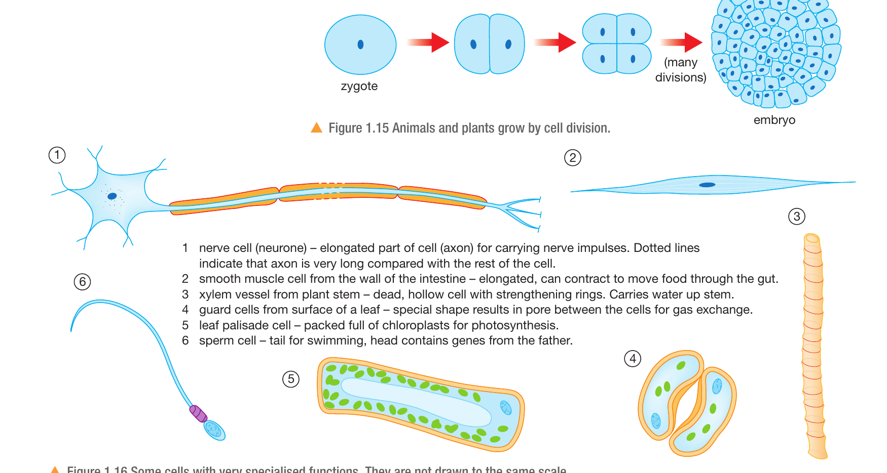

Cell division
Increases the number of cells.
Explain how differentiation produces specialised structures, then apply the reasoning to an unfamiliar cell.
Complete the teacher action from Lesson 1 before starting the retrieval.
Read the next-action tag first: retrieve, explanation, mathematics or vocabulary.
Write the correction as a full sentence. Do not simply add a missing word.
Explain why many mitochondria would be useful only if the cell has a high energy demand.
Multicellular organisms begin with unspecialised cells. Different cells then develop structures suited to particular functions.
Increases the number of cells.
Produces cells with specialised structures and functions.
Specialised cells combine into tissues, organs and systems.
Use three verbs: divides, differentiates, performs.
Division changes cell number. Differentiation changes cell structure and function.
Explain why a multicellular organism cannot operate effectively if every cell remains unspecialised.
A cell or organism increases in size.
One cell produces new cells.
A cell develops structures that suit a particular function.

Select two cells. For each, identify a visible feature and the function it could support.
Name the structure precisely.
State what the structure enables.
Explain why that benefits the organism.
Choose the palisade cell or sperm cell. Their visible features are strongly contrasted.
Use: The cell has __. This allows __, so __.
Compare one animal cell with one plant cell. Identify a specialisation trade-off.
Write: “Many chloroplasts help the palisade cell photosynthesise.” Pause. Ask which word hides the mechanism, cross it out, then build the causal chain with the class.
A palisade cell contains many chloroplasts.
The chlorophyll in the chloroplasts absorbs light energy.
This supports a high rate of photosynthesis, so the leaf can produce more glucose.
Feature: many chloroplasts. Process: absorb light. Outcome: more photosynthesis.
Join the ideas with because, which means, or therefore.
Explain why a root cell usually lacks this specialisation and why that is not a disadvantage.
At least 80% secure: apply the model. Otherwise contrast division and differentiation again before practice.
Open printed page 24. The task asks about a motor neurone and a palisade cell.
Neurone feature: a long axon. Palisade feature: many chloroplasts.
Write one complete causal chain per cell before adding a second feature.
Explain a trade-off caused by extreme specialisation in either cell.
Use the guard-cell model to reason from structure, then interrogate your own claim.
Choose the better claim. A: the pair regulates gas exchange by changing pore width. B: the pair mainly absorbs light for photosynthesis.
Use visible structure and relevant biology. Explain why your claim is stronger and what weakens the alternative.
What controlled observation or measurement would test your claim and could show that it is wrong?
Support must name a visible feature, such as the curved paired shape or the central pore.
Use: This supports the claim because __.
Design one observation that would show the pore opening or closing.
A smooth muscle cell is elongated and contains contractile proteins. It contracts to move material through the intestine.
Underline the command word and circle the stated function. Plan two separate causal chains before writing.
Use three blank planning boxes: feature, mechanism, biological outcome. Supply the biology from memory and the stimulus.
Explain a trade-off, then state what evidence would test your prediction.
Name the criterion. Identify the exact sentence. Suggest a biological improvement.
Model comment: “You named the elongated shape, but the mechanism is missing. Explain how the shape supports contraction along the cell.”
Why is differentiation essential for a multicellular organism? Use one specialised-cell example.
Explain differentiation and use structure-function-advantage reasoning with familiar and unfamiliar specialised cells.
Differentiation, specialised cell, adaptation, function, tissue, organ, organ system, causal chain, trade-off.
Pearson printed page 19 for Figures 1.15 and 1.16. Printed page 23 for Question 4. Printed page 24 for Question 9.
Assignment code Y10-BIO-TRI-W01-LOOP. No pupil link is displayed until the assignment is published.